Le laser SLAB à une cavité à guide d'onde, qui diffère des lasers conventionnels par le fait que la lumière circulant dans le résonateur est guidée sur un axe du résonateur par la réflexion rasante sur les faces des 2 électrodes de décharges. Pour satisfaire cette condition, il faut que la surface des électrodes soient au "poli spéculaire" (rms inférieur à 2 um) et que la distance entre les électrodes soit la plus petite que possible. Et donc dans ce cas, la lumière n'obéit plus à la loi de la propagation d'onde dans un espace libre. Le terme "SLAB" est utilisé pour désigner un laser ayant une section de décharge rectangulaire, région définie entres les 2 surfaces des électrodes de décharges planes.
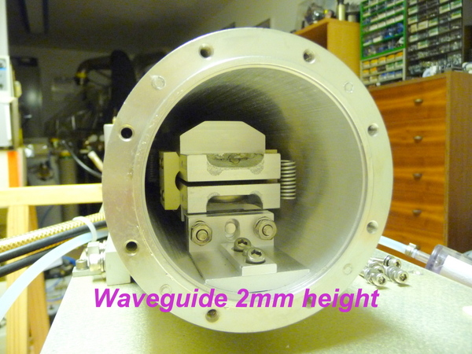
La distance entre les électrodes de décharges dans ce laser est de 2mm, dans cette axe le rayonnement est réfléchit sur la surface par l'angle rasant que fait la lumière. Dans l'autre axe la largueur des électrodes de décharge est de 44mm et là le rayonnement obéit à la loi de la propagation d'onde dans un espace libre. La longueur des électrodes de décharges est de 800mm ! La pression de travail est de 120 torr soit 10x plus élevée que dans un laser conventionnel à décharge longitudinal. Ce qui veut dire, que la longueur de la cavité est multipliée par 10 également ! Voilà pourquoi un laser d'aussi petite dimension est si puissant. Ce laser est capable de couper de la tôle acier inoxydable de 3.2mm d'épaisseur à un vitesse de 1 mètre par minute !!
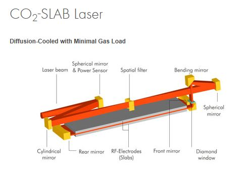
Avantage majeur dans un laser SLAB est que l'on produit une décharge
transversal par rapport à l'axe optique avec une distance entre
électrodes très petite ce qui permet de travailler avec des tensions
plus faibles donc moins dangereuses et que le refroidissement du gaz par
collision thermique se produit sans avoir besoin de faire circuler le
gaz à haute vitesse dans des échangeurs de chaleur au moyen de
compresseur Roots ou par turbo compresseur muni de moteur électrique
haute fréquence.
Le laser SLAB se compose d'un résonateur du type "instable à branche négative" pour l'axe de propagation "d'onde en espace libre". Dans l'axe à propagation "d'onde guidée", le couplage avec les miroirs est le plus critique pour les 2 raisons suivantes; les miroirs doivent être le plus proche que possible des électrodes de décharges pour éviter les pertes de couplage par diffraction de Fresnel et le plus loin possible de celles-ci pour éviter la pollution par "sputtering" Les miroirs sont du type sphériques et le rayon de courbure est le même dans l'axe guide d'onde et non guide d'ondes pour de raison de coût de fabrication. Les ajustements des miroirs sont fait par l'extérieur avec une étanchéité parfaite car le système n'a aucun passage à travers le tube il se produit par la déformation d'une zone ou le paroi est très mince.
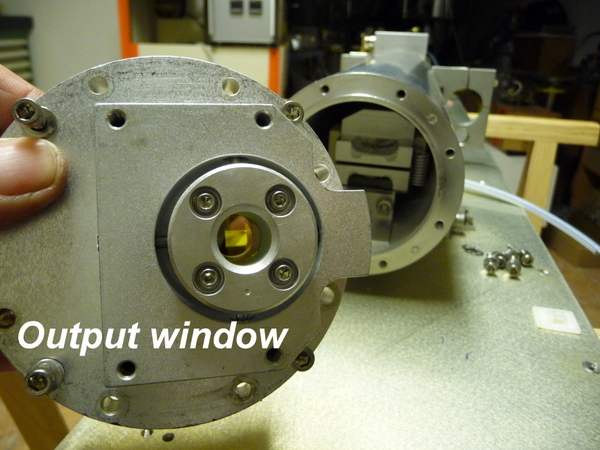
Un miroir se compose d'une portion de miroir sphérique avec un rayon de courbure de 820mm de rayon et de section rectangulaire de 50mm x 8mm. L'autre miroir se compose d'une portion de miroir sphérique avec un rayon de courbure de 780mm de rayon et de section rectangulaire de 40mm x 8mm avec une fenêtre de ZnSe permettant au faisceau de sortir de la cavité contenant le mélange He/N2/CO2/Xe pour être dirigé par 2 miroirs totalement réflecteur à 45 degrés sur le miroir de sortie concave formant le résonateur à branche négative au foyer du quel se trouve un filtre spacial travaillant uniquement dans un axe voilà pourquoi ce n'est pas un orifice calibré mais 2 lame de cuivre formant une fente pour créer le mode TEM00 (HE11)
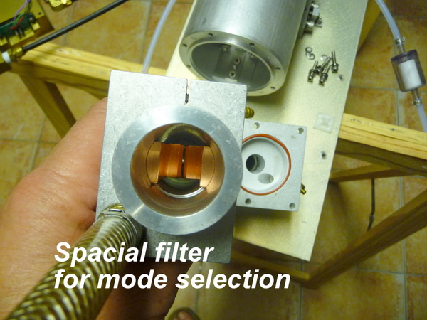
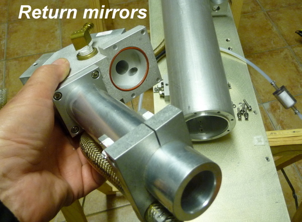
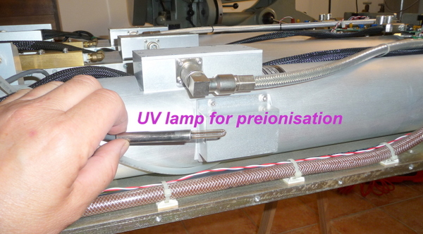
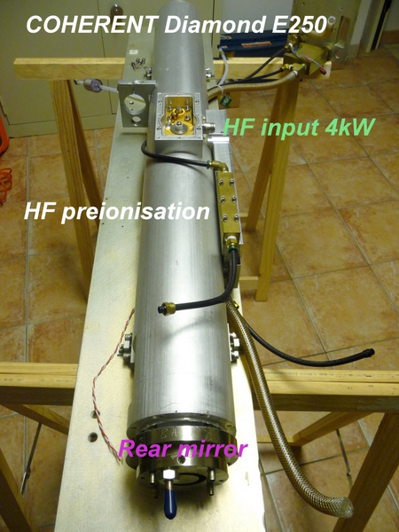
voici le tube laser en cours de démontage. On vois bien le boitier de couplage de l'entrée haute fréquence à 81.43 MHz et de 4kW pulsable de 1 Hz à 100kHz. Le boitier appeler "UV preionisation" est un petit génerateur HF qui permet de créer une préionisation au moyen d'un plasma UV permettant d'amorcer la décharge principal surtout au faible puissance d'émission. L'ancienne version de ce laser était muni d'une lampe UV à Hg-Ar émettant à 185nm et 245nm.
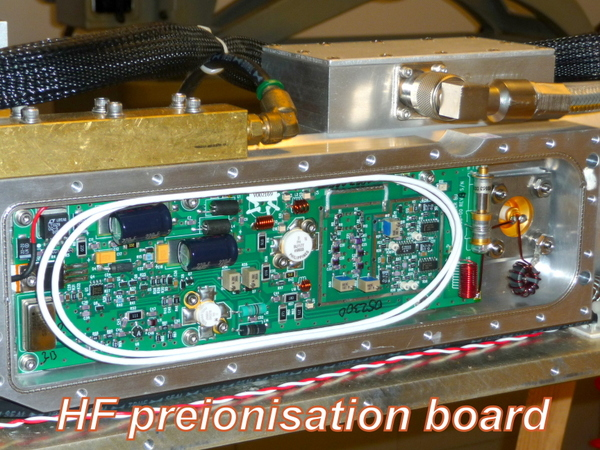
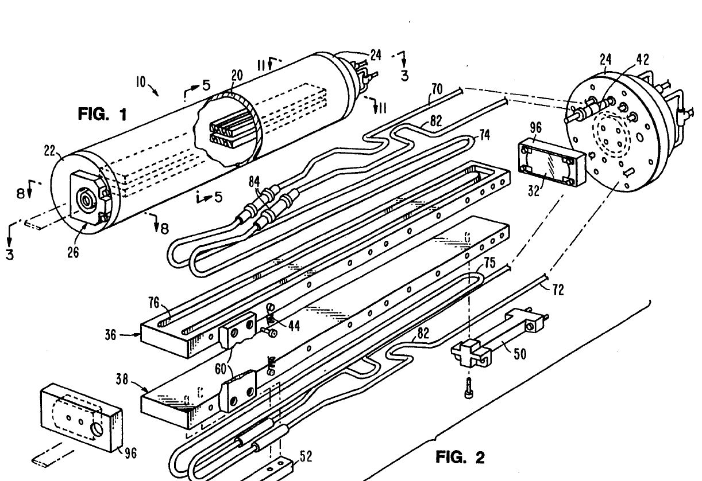
voici la vue intérieur du tube laser (20) en aluminium.Les flasques (22) et (24) eu acier inoxydable ferme le tube par des joints en INDIUM et il font également office de support de miroirs réglable par l'extérieur. Les conduites (74) et (75) servent à refroidir les électrodes de décharges (36) et(38) en aluminium. Les espaceurs (60) maintiennent les électrode de décharge à la distance de 2mm.
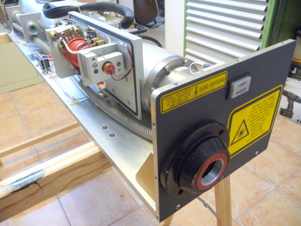
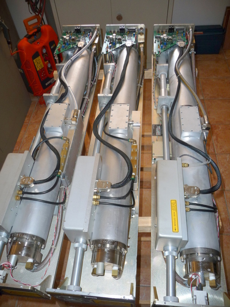
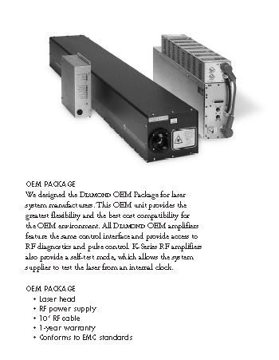
Le "beam catcher" permet d'interrompre la sortie du faisceau sans interrompre la décharge plasma entre les électrodes de décharges. Il se compose d'un disque absorbant refroidit par circulation d'eau monté sur un bras oscillant actionné par un actuateur électromagnétique ultra rapide. Il est également équipé d'un laser à diode permettant de visualiser le point d'impact lorsque le faisceau laser est coupé.
Pour cela il y a deux petits miroirs de renvoie à 45 degrés fixé sur le bras oscillant et la diode laser est montée sur un fixation réglable permettant de faire l'alignement des deux lasers sur le même point focal.
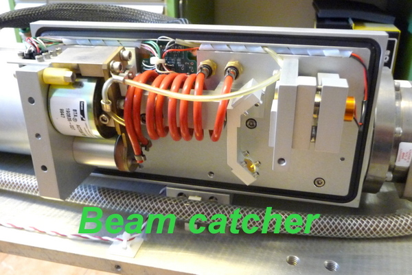
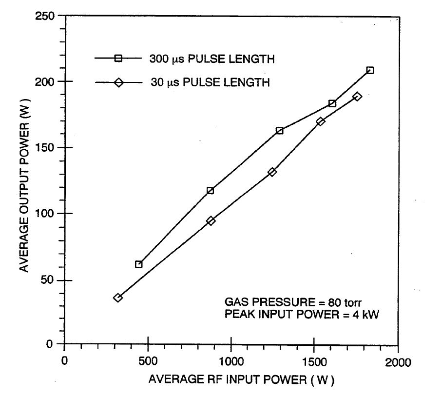
Comme le diagramme le montre la puissance de sortie en fonction de la puissance HF de pompe suivant la durée de pulse varie très peu.
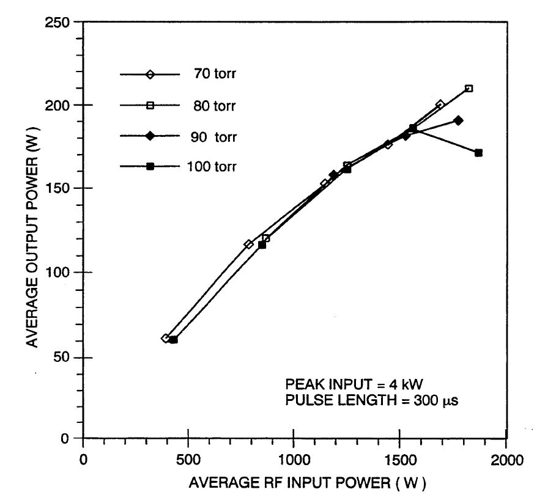
Variation de la puissance de sortie en fonction de la puissance HF pompe pour différente pression du gaz He/N2/CO2/Xe l'effet se fait sentir a partir de 1600W ou il est préférable d'avoir une pression de 70 torr.
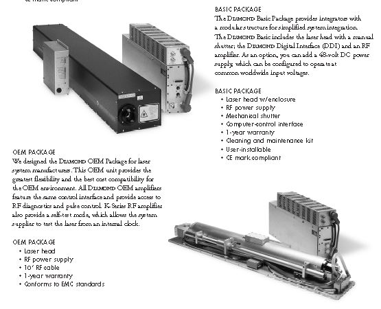
Démontage pour révision des électrodes de décharges. Pour cela il faut détacher les amenées de courant HR qui sont fixées sur les électrodes ( 4h de travail) puis sortir avec délicatesse les électrodes. La distance de 2mm entre électrodes est maintenue par 12 espaceurs en céramique. Une vingtaines de selfs sont distribuées le long des électrodes pour annulé la capacité formée par celles-ci. L'électrode du bas est reliée à la masse et l'électrode du haut est couplée sur le passage (feedthrough) de la HF venant du cable coaxial double blindage.
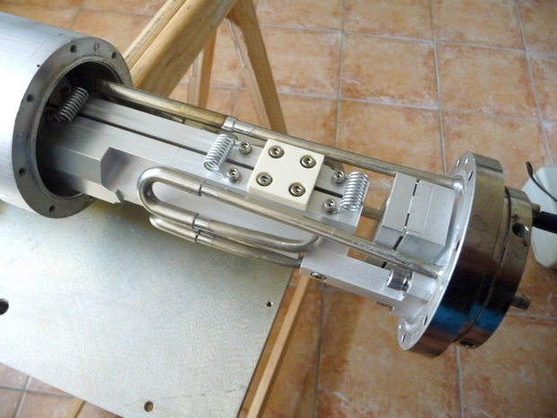
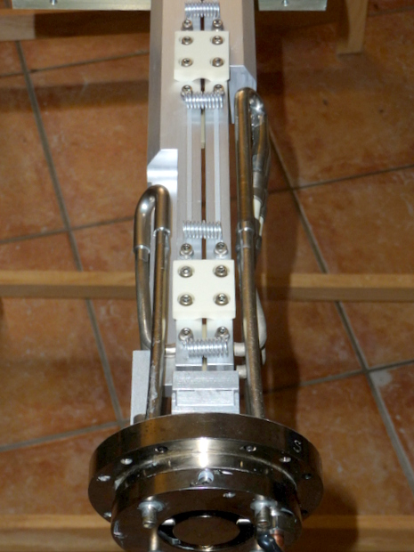
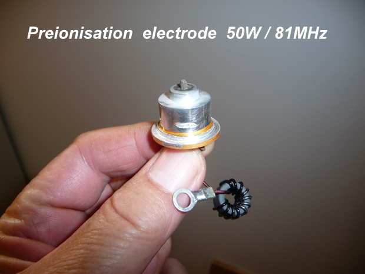
L'amorçage de la décharge plasma à puissance réduite pose des problèmes d'amorçage surtout en régime pulsé. Pour éviter des ratés d'allumage une pré-ionisation par décharge HF créer par photo-ionisation UV des électrons libres dans le gaz qui favorise une décharge rapide et homogène du milieu.
Les premiers lasers K250 étaient munis d'une pré-ionisation UV émise par une lampe à vapeur de mercure et d'argon ( 185 et 254nm)
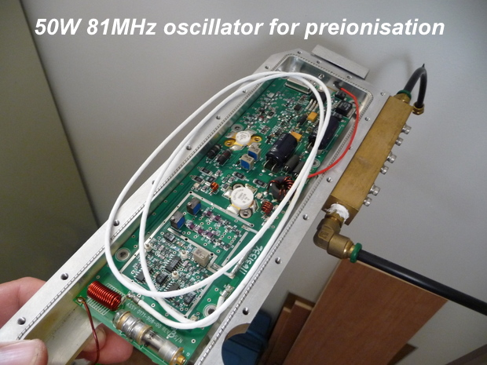
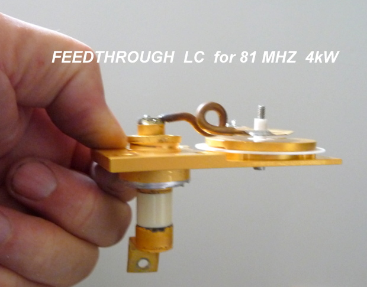
voici le feedthrough (passage de la HF 4kW) venant du cable coaxial et alimentant l'électrode de décharge. Une adaptation de l'impédance au moyen du circuit "LC" une spire de cuivre et une capacité utilisant un disque mince en alumine (Al2O3)
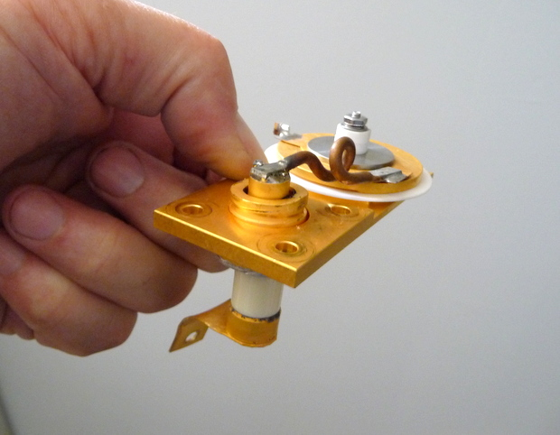
ici on vois bien les 2 électrodes de décharge en aluminium équipées des tubes de refroidissement avec les isolateurs céramique sur l'électrode active. Sur la photo on vois le miroir arrière de forme rectangulaire de 6mm x 50mm ainsi que les espaceurs en céramique permettant de tenir le gap de 2 mm entres les électrodes de décharge de 800mm de longueur.
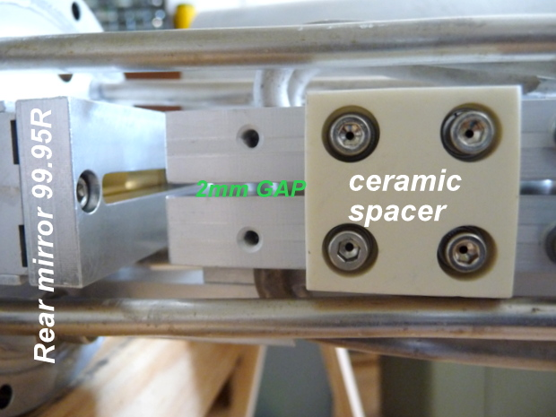
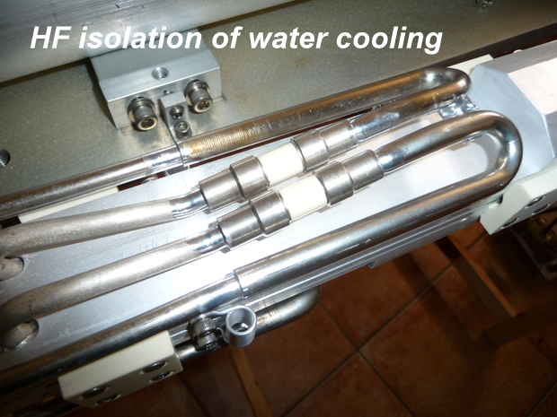
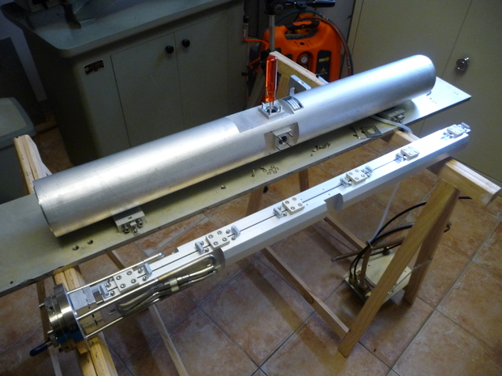
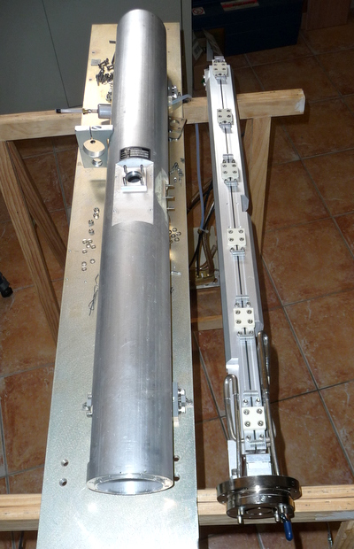
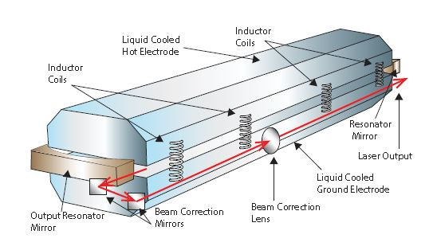
Video en HD
Maintenant je vais usiné une fente longitudinal à la hauteur du gap de 2mm des électrodes de décharge et coller une fenêtre de visualisation pour observer la décharge plasma. Je vais également monté une vanne pour entré le mélange gazeux avec une prise pour mesurer la pression dans le tube puis après ce sera le remontage et les essais avec un générateur de 13 MHz qui délivre 5kW.............. J'ai également commandé de l'indium pour refaire les 2 joints des flasques supportant les miroirs.
vous verez la complexité pour réalisé un pompage du gaz homogène par le couplage radio fréquence!
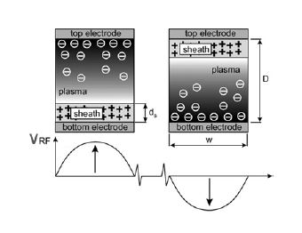
la fréquence d'excitation détermine l'épaisseur ds de la zone ionique +, cette épaisseur est inversement proportionnel à la fréquence et doit être inférieur à 10% de distance inter électrodes ds . f = 42mm.MHz
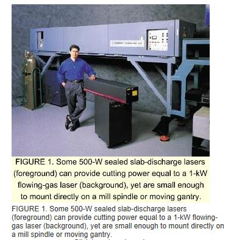
Impresionant la différence de taille d'un laser CO2 SLAB de 1 kW
comparer à un laser CO2 à décharge longitudinal de même puissance.